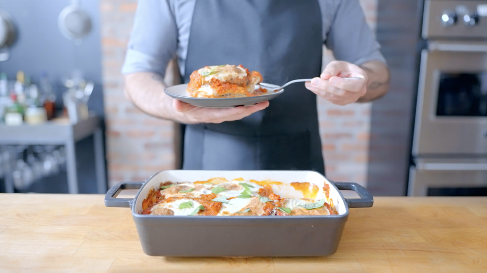

The Sims Special
This week we’re tackling the weird and wonderful food from The Sims.
First on our list, Mac and Cheese. While seemingly simple, we couldn’t
resist putting our own spin on it. Next up, a *new* classic, the ultra comforting
Aubergine Parmesan (alternate identity: Eggplant Parm). And finally,
the ever-challenging Baked Alaska. The perfect summer dessert, best accompanied
by your household fire extinguisher.

Mac and Cheese Ingredients:
- 1 ½ Cups water
- 1 Cup whole milk
- 8 oz dried macaroni
- 4 oz american yellow cheese, shredded
- 6 oz sharp cheddar cheese, shredded
Molten Mac and Cheese Ingredients:
- 1 ½ Cups water
- 1 Cups whole milk
- 8 oz dried macaroni
- 8 oz american yellow cheese, shredded
- 4 oz sharp cheddar cheese, shredded
- 2 Tbsp unsalted butter, melted
- 3 oz panko bread crumbs
- Reserved chilled stovetop mac and cheese
- To garnish: parsley leaves
Italian Meringue Ingredients:
- 4 egg whites
- ⅛ tsp cream of tartar
- 225 g granulated sugar
- 45 g water
Mac and Cheese Instructions:
- Line a small bowl with plastic wrap.
- Combine the water and milk in a saucepot. Add the pasta and bring the mixture to a boil.
- Cover and cook until the pasta is cooked and has absorbed most of the liquid, about 6-8 minutes.
- Add the cheese and stir to combine. Turn off the heat and cover the pot. Let the macaroni and cheese sit for 5 minutes until all the cheese has melted.
- Pour the pasta into the prepared bowl and refrigerate until firm, about 30 minutes.
- Take the solidified mac and cheese out of the refrigerator and unmold.
This recipe is too long. The rest of it can be found on the
Binging With Babish website